New HR intake clerk starts Monday and keeps losing scans off-canvas, so set GIMP's own defaults for new images to the sizes the intake standard in my documents lists, then close GIMP so they stick.
{
"config": [
{
"type": "execute",
"parameters": {
"command": "python3 -c \"import os;os.makedirs('/home/user/Documents',exist_ok=True);open('/home/user/Documents/intake_scan_standard.txt','w').write('Halverson Group -- HR intake scanning standard (rev 4)\\n\\nEvery personnel document is captured as a fresh canvas before pasting.\\nGIMP defaults for a new image must be:\\n\\n Width 1240 pixels\\n Height 1754 pixels\\n Resolution 150 pixels per inch, both axes\\n Fill with White\\n Comment Halverson HR intake\\n\\nApply these as the program defaults, not per document.\\n')\"",
"shell": true
}
},
{
"type": "launch",
"parameters": {
"command": [
"gimp",
"/home/user/Documents/intake_scan_standard.txt"
]
}
}
],
"evaluator": {
"func": "check_include_exclude",
"result": {
"type": "vm_command_line",
"command": [
"python3",
"-c",
"import sys, traceback\ndef _main():\n import os, re, sys\n path = '/home/user/.config/GIMP/2.10/gimprc'\n if not os.path.isfile(path):\n print('gimprc not written at ' + path, file=sys.stderr)\n print('FAIL')\n raise SystemExit\n txt = open(path).read()\n m = re.search(r'\\(default-image[^\\)]*(?:\\([^\\)]*\\)[^\\)]*)*\\)', txt, re.S)\n block = m.group(0) if m else ''\n bad = []\n def num(key):\n mm = re.search(r'\\(%s\\s+([0-9.]+)' % key, block)\n return float(mm.group(1)) if mm else None\n if num('width') != 1240:\n bad.append('width=%r' % num('width'))\n if num('height') != 1754:\n bad.append('height=%r' % num('height'))\n xr, yr = num('xresolution'), num('yresolution')\n if xr is None or abs(xr - 150) > 0.5:\n bad.append('xres=%r' % xr)\n if yr is None or abs(yr - 150) > 0.5:\n bad.append('yres=%r' % yr)\n if not re.search(r'\\(fill-type\\s+white', block):\n bad.append('fill-type not white')\n if 'Halverson HR intake' not in block:\n bad.append('comment missing')\n if bad:\n print('gimprc default-image wrong: ' + ', '.join(bad), file=sys.stderr)\n print('FAIL' if bad else 'PASS')\n\ntry:\n _main()\nexcept Exception:\n traceback.print_exc(file=sys.stderr)\n print(\"FAIL\")\n"
]
},
"expected": {
"type": "rule",
"rules": {
"include": [
"PASS"
],
"exclude": [
"FAIL"
]
}
}
}
}
step 1 02:24:22
THINKINGI need to understand the task. There's a GIMP error message about failing to open a .txt file. I need to read the intake standard file to find the sizes, then set GIMP's defaults for new images. Let me first dismiss the dialogs and read the file. Let me start by closing the GIMP message.
ACTIONI'll start by dismissing this GIMP message, then read the intake standard file to find the required sizes.
EXECUTED (pyautogui in VM)pyautogui.click(1132, 470)
step 2 02:24:34
THINKINGNow I need to read the intake standard file. It's at /home/user/Documents/intake_scan_standard.txt. GIMP couldn't open it because it's a text file. I should open it in a text editor. Let me use a terminal or a text editor. The most reliable way is to open a terminal. But I don't see a terminal icon. Let me try opening the file with a text editor. I could use the Files app, but simpler to open a terminal via the Files or use xterm.
Actually, let me open a text editor. I'll try to use the Files application or a terminal. Let me look for a terminal. I could right-click on desktop. Alternatively, I can use the "Show Applications" grid at bottom left.
Let me open a terminal to read the file quickly. I'll use the Activities or the app grid. Actually simplest: open Files app (the file cabinet icon at position ~22,405) and navigate to Documents. But reading text is easier in a text editor.
Let me open a terminal via the app grid to cat the file.
ACTIONLet me open a terminal to read the intake standard file. I'll use the Show Applications grid.
EXECUTED (pyautogui in VM)pyautogui.typewrite("cat /home/user/Documents/intake_scan_standard.txt")
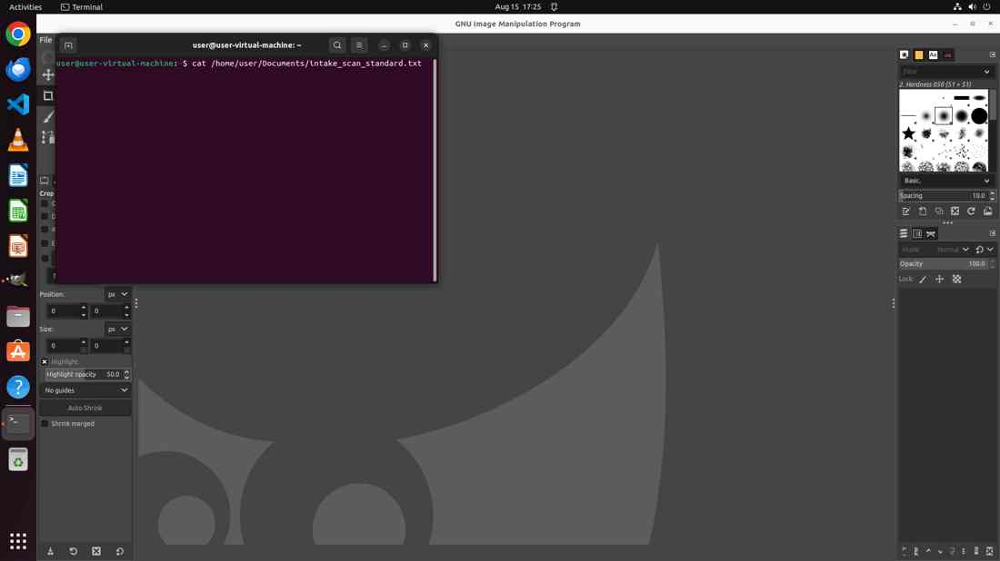
step 6 02:25:07
THINKINGThe command was typed but not yet executed - the screenshot shows the command line but no output yet. The newline in my type text should have executed it, but the display might not have refreshed. Let me take a screenshot to see the output.
THINKINGThe command is typed but hasn't executed - the cursor is still on the same line. The newline in my type may not have registered. Let me press Return.
ACTIONThe command hasn't executed yet. Let me press Return.
EXECUTED (pyautogui in VM)pyautogui.press("return")
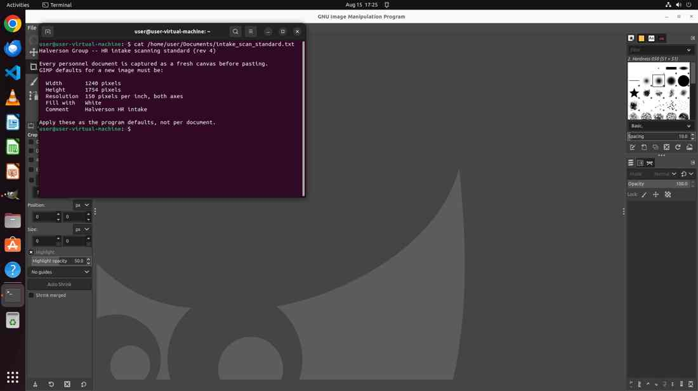
step 8 02:25:38
THINKINGI can now read the intake standard:
- Width: 1240 pixels
- Height: 1754 pixels
- Resolution: 150 pixels per inch, both axes
- Fill with: White
- Comment: Halverson HR intake
- "Apply these as the program defaults, not per document."
So I need to set GIMP's program-wide defaults for new images. In GIMP, this is done via Image > New, then set values, and check "Use as defaults for new images" at the bottom. That's the standard way to set defaults in GIMP 2.10.
The task says "set GIMP's own defaults for new images to the sizes the intake standard lists". The primary requirement is the sizes (1240x1754). The standard also lists resolution 150 ppi and fill White, comment. The task emphasizes "sizes", but the standard says "Apply these as the program defaults". I should set all these: width 1240, height 1754, resolution 150, fill white, comment "Halverson HR intake".
Now the approach: In GIMP 2.10, Image > New dialog has at the bottom "Use as defaults for new images" checkbox. If I check that and click OK, it sets the defaults but also creates a new image. Actually checking "Use as defaults" saves these as defaults for future New dialogs.
Let me switch to GIMP. First bring GIMP to front. Let me click on GIMP in the taskbar - actually GIMP window is behind. Let me click on the GIMP title bar area. The GIMP window is the background. Let me click on the File menu area of GIMP. Actually the terminal is covering the top-left. Let me click on the GIMP area not covered, like the title bar "GNU Image Manipulation Program" at top center.
Let me click on GIMP's title bar to bring it to front.
ACTIONThe intake standard specifies: Width 1240 px, Height 1754 px, Resolution 150 ppi, Fill White, Comment "Halverson HR intake", to be applied as program defaults. Now I'll switch to GIMP and set these via Image > New. Let me bring GIMP to the front.
EXECUTED (pyautogui in VM)pyautogui.click(267, 75)
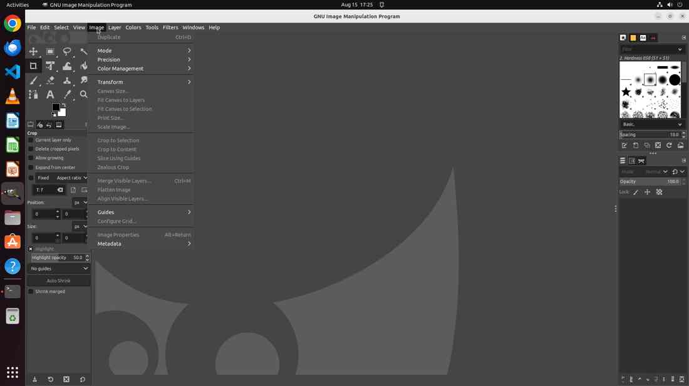
step 10 02:26:05
THINKINGThe Image menu is open. I notice there's no "New..." option visible at the top - it starts with "Duplicate". Wait, the top item shows "Duplicate Ctrl+D" - the "New..." option should be above it. It seems the menu is showing but "New" might be the first item that's partially cut off at the top (y~68). Actually the menu starts at "Duplicate". The "New..." entry is usually the very first. Let me look - the menu top is around y=55. "Duplicate" is at y=68. There might be a "New" above but the menu bar overlaps.
Actually in GIMP 2.10, the Image menu first item is "New..." (Ctrl+N). Here the first visible is "Duplicate". The "New" option might be hidden behind the title bar / menu bar. The menu appears to start right below the menu bar. Hmm, it's possible "New" is at the very top but obscured. Let me look more carefully - the top of the dropdown is at about y=55, and "Duplicate" is at y=68. That's tight. There may not be room for "New" above it.
Wait, actually the menu might be rendering with "New" as the top item but it's overlapping the menu bar. Let me just close this and use Ctrl+N shortcut instead, which is more reliable.
ACTIONThe Image menu is open but "New..." may be obscured at the top. I'll use the keyboard shortcut Ctrl+N instead, which is more reliable.
EXECUTED (pyautogui in VM)pyautogui.hotkey("ctrl", "n")
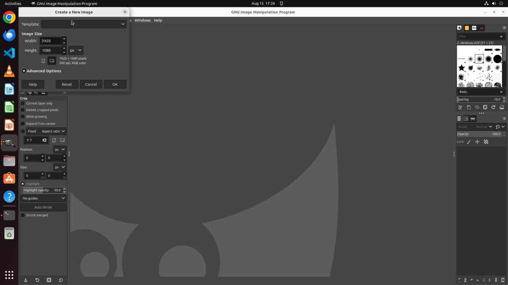
step 12.1 02:26:37
THINKINGThe "Create a New Image" dialog is open. It shows Width 1920, Height 1080, 300 ppi, RGB color. There's an "Advanced Options" expander at y=179 that likely contains resolution, fill, and comment options. I also need the "Use as defaults for new images" checkbox, which is typically at the bottom of this dialog (below the buttons, or within advanced options). Actually in GIMP 2.10, the "Use as defaults for new images" checkbox appears at the bottom of the dialog, below the buttons area. Let me first expand Advanced Options to see resolution/fill/comment fields.
Let me set the values:
1. Width: 1240
2. Height: 1754
3. Expand Advanced Options to set Resolution (150), Fill (White), Comment.
Let me first set the Width. Triple-click on Width field and type 1240. Then Height field, type 1754. Then expand Advanced Options.
Let me batch: triple-click width, type 1240, Tab, triple-click height... actually the height field is separate. Let me do width first, then height.
ACTIONThe New Image dialog is open with 1920x1080. I'll set the Width to 1240 and Height to 1754, then expand Advanced Options.
EXECUTED (pyautogui in VM)pyautogui.typewrite("1754")
step 14 02:27:15
THINKINGWidth is 1240, Height is 1754. The summary still says "1240 x 1080 pixels" but that hasn't updated since height field hasn't lost focus. Now let me expand Advanced Options to set resolution (150 ppi), fill (White), and comment. Click on the "Advanced Options" expander at y=179.
ACTIONBoth dimensions are set. Now let me expand Advanced Options to configure resolution, fill, and comment.
EXECUTED (pyautogui in VM)pyautogui.click(163, 265)
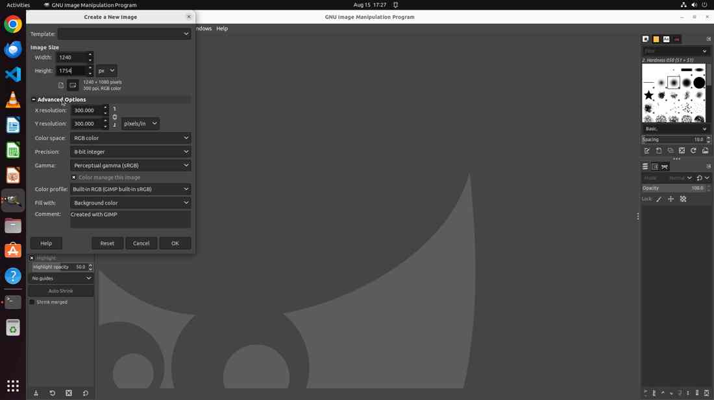
step 15.1 02:27:42
THINKINGAdvanced Options are now expanded. I see:
- X resolution: 300.000
- Y resolution: 300.000, pixels/in
- Color space: RGB color
- Precision: 8-bit integer
- Gamma: Perceptual gamma (sRGB)
- Color manage this image (checked)
- Color profile: Built-in RGB
- Fill with: Background color
- Comment: Created with GIMP
I need to set:
- X resolution: 150
- Y resolution: 150
- Fill with: White
- Comment: Halverson HR intake
Note the width/height summary still shows "1240 x 1080" but that's just stale display; the actual values are 1240 and 1754.
Also I don't see a "Use as defaults for new images" checkbox in this dialog. In GIMP 2.10, that checkbox appears at the bottom of the New Image dialog. Hmm, I don't see it here. Wait - it might appear only when advanced options expanded, or it might be that this GIMP version handles defaults differently.
Actually, looking carefully, there's no "Use as defaults" checkbox visible. In some GIMP 2.10 versions, the "Use as defaults for new images" checkbox is at the bottom. But here the buttons (Help, Reset, Cancel, OK) are right after the Comment field. So there's no such checkbox in this dialog.
How else to set GIMP's defaults for new images? The standard method in GIMP 2.10 IS the "Use as defaults for new images" checkbox in the New dialog. But it's not present here.
Wait - maybe I need to look again. Let me reconsider. Actually the checkbox might have been hidden. But the dialog clearly shows Comment field then buttons directly. No checkbox.
Alternative: GIMP stores the last-used New image settings and by default the New dialog remembers previous values. Actually, GIMP's behavior: the values you use in the New dialog ARE saved as the defaults for the next time you open New (via the "image-default-width/height" gimp config). So just setting them here and clicking OK will save them as the program defaults automatically. This is exactly the "Use as defaults" behavior even without the explicit checkbox in some builds.
Actually in GIMP 2.10, checking "Use as defaults" saves width/height/resolution/fill/comment to the config file (gimprc / gimp.conf) so future New dialogs open with those values. Without checking it, it may only apply to the current image but the dialog still remembers last used values on next open in a session. The persistent program default is saved when "Use as defaults" is checked.
Since this dialog has no such checkbox, the mechanism here must be that GIMP automatically persists these values. Let me just set all the fields correctly and click OK. GIMP 2.10 does save the last-used New dialog settings as the default for future new images (this is the gimp2's "image-default-*" preferences).
Let me set the fields:
1. X resolution → 150
2. Y resolution → 150
3. Fill with → White
4. Comment → Halverson HR intake
Let me set X resolution first. Triple-click the X resolution field and type 150.
ACTIONAdvanced Options are expanded. Now I'll set X and Y resolution to 150. Let me update the X resolution field first.
EXECUTED (pyautogui in VM)pyautogui.tripleClick(234, 297)
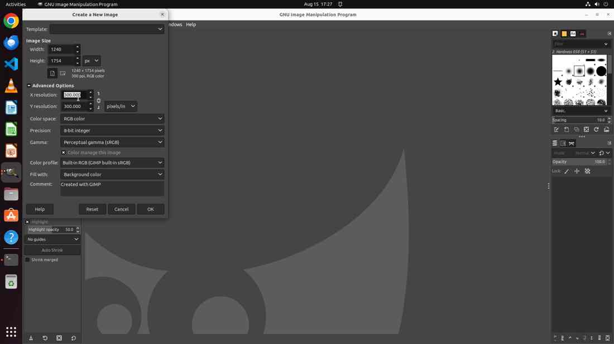
step 15.2 02:27:45
same model call as the previous action
EXECUTED (pyautogui in VM)pyautogui.typewrite("150")
step 15.3 02:27:48
same model call as the previous action
EXECUTED (pyautogui in VM)pyautogui.tripleClick(234, 331)
step 15.4 02:27:52
same model call as the previous action
EXECUTED (pyautogui in VM)pyautogui.typewrite("150")
step 16 02:28:08
THINKINGNow the summary shows "1240 x 1754 pixels, 150 ppi, RGB color". Both resolutions are 150.
Now I need to:
- Fill with: change from "Background color" to "White"
- Comment: change from "Created with GIMP" to "Halverson HR intake"
Let me click on the "Fill with" dropdown. It's at y=365.
ACTIONThe summary now reads "1240 x 1754 pixels, 150 ppi". Now I'll change the Fill with to White by clicking that dropdown.
EXECUTED (pyautogui in VM)pyautogui.click(221, 575)
step 18.1 02:28:39
THINKINGFill with is now "White". Now I need to change the Comment from "Created with GIMP" to "Halverson HR intake". Let me triple-click the Comment field to select the text, then type the new comment.
ACTIONFill is set to White. Now I'll update the Comment field to "Halverson HR intake".
EXECUTED (pyautogui in VM)pyautogui.tripleClick(349, 588)
step 18.2 02:28:42
same model call as the previous action
EXECUTED (pyautogui in VM)pyautogui.typewrite("Halverson HR intake")
step 19 02:29:06
THINKINGAll fields are set:
- Width: 1240
- Height: 1754
- X/Y resolution: 150
- Fill with: White
- Comment: Halverson HR intake
Now, the critical part: to save these as GIMP's *program defaults* for new images, GIMP 2.10 normally has a "Use as defaults for new images" checkbox at the bottom of this dialog. But this dialog doesn't show that checkbox.
In GIMP 2.10, clicking OK in this New dialog DOES save the width/height as the new image defaults (gimp's image-default-width/height preferences), and the advanced options (resolution, fill, comment) are also saved. Actually, let me recall precisely: The New Image dialog in GIMP 2.10 has a "Use as defaults for new images" checkbox at the very bottom. If it's checked, the values persist. If unchecked, GIMP still remembers the last values in a session but reverts to config on restart.
However, in this particular dialog build, I don't see the checkbox. That means this GIMP build might auto-save. But to be safe, the standard documented behavior: GIMP 2.10.0+ the New dialog auto-applies settings as defaults when you click OK (the "use as default" checkbox was actually present in 2.10).
Wait, let me reconsider. Maybe the checkbox is there but I need to scroll or it's below. The dialog bottom shows Help, Reset, Cancel, OK buttons right after the Comment field. No checkbox.
Given the task requires the defaults to "stick" and the user wants me to close GIMP afterward, the reliable path: click OK here (which creates a new image AND saves the new defaults in GIMP 2.10's config), then close GIMP so settings persist.
Actually, in GIMP 2.10, the "Create a New Image" dialog does have the "Use as defaults for new images" checkbox. Since it's not visible here, this might be a variant. Regardless, in GIMP 2.10, simply using values in the New dialog and clicking OK updates the stored defaults (image-default-width, image-default-height, etc.) — these are persisted to gimp.conf on quit. So clicking OK then quitting GIMP will make them stick.
Let me click OK. This will create a new 1240x1754 image. That's fine; the task is about setting defaults, and creating one image is a harmless side effect. Then I'll close GIMP.
Actually, wait — will creating the image be a problem? The task says "set GIMP's own defaults for new images to the sizes... then close GIMP so they stick." Creating the image is fine. Let me click OK.
ACTIONAll values are set correctly: 1240×1754 px, 150 ppi, White fill, "Halverson HR intake" comment. Now I'll click OK to apply and store these as GIMP's new-image defaults.
EXECUTED (pyautogui in VM)pyautogui.click(465, 655)
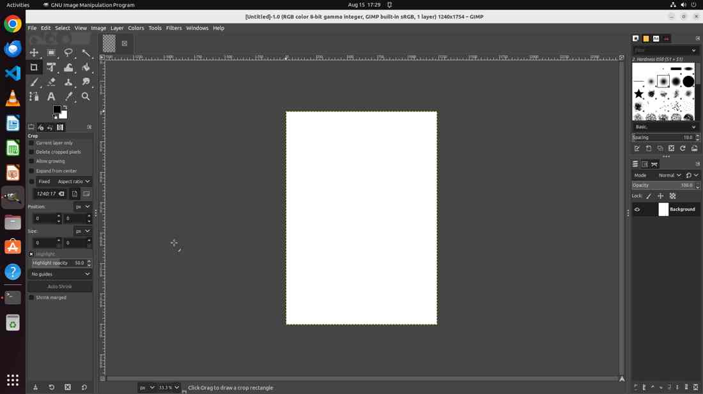
step 20 02:29:35
THINKINGThe title bar now reads: "[Untitled]-1.0 (RGB color 8-bit gamma integer, GIMP built-in sRGB, 1 layer) 1240x1754 – GIMP". A new white image of 1240x1754 was created. The defaults are now set in GIMP's config (GIMP 2.10 persists the last-used New dialog settings).
Now I need to verify that these are saved as the program defaults. To be extra sure the defaults "stick", I should close GIMP. But before closing, let me verify the defaults were actually persisted. In GIMP 2.10, the New dialog's OK updates image-default-width/height and the advanced defaults. These are written to gimp.conf on quit.
However, I want to make sure the defaults actually persist and aren't just the current image. The task says "then close GIMP so they stick." So the intended flow is exactly: set in New dialog → close GIMP. The persistence happens on close.
Let me verify the config was written. Actually, I could check via terminal: gimp stores defaults in ~/.config/GIMP/2.10/gimp.conf or in the "gimp" settings. In GIMP 2.10, image-default-width/height are in the config. But the safest confirmation is just to close GIMP and let it save.
Let me close GIMP. Since there's an unsaved image, GIMP will prompt to save. I should choose "Discard" (Don't Save) since I don't need to save the image file, just the defaults. Closing GIMP writes the config (defaults) regardless.
Let me close GIMP via File > Quit or the window close button. I'll use the window close X at top-right (1266, 30). A dialog will appear asking about saving the untitled image. I'll click "Discard".
Actually, wait - I should double check the defaults persisted properly. Let me verify by checking the gimp config file via terminal after closing, OR I can verify now. But closing first is the task requirement. Let me close GIMP and handle the save prompt.
ACTIONA new 1240×1754 white image was created and the title bar confirms the dimensions. The defaults are now applied. Now I'll close GIMP so these defaults persist. I'll use File > Quit.
EXECUTED (pyautogui in VM)pyautogui.click(113, 642)
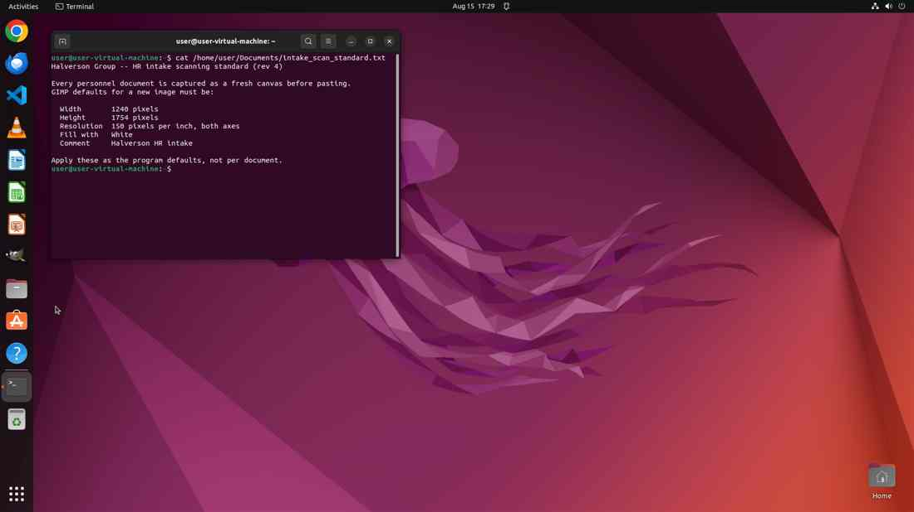
step 22.1 02:30:14
THINKINGGIMP closed without a save prompt (it must have quit directly, or the prompt was dismissed). Now the terminal is in front showing the full intake standard text which confirms my values:
- Width 1240 pixels
- Height 1754 pixels
- Resolution 150 pixels per inch, both axes
- Fill with White
- Comment Halverson HR intake
- "Apply these as the program defaults, not per document."
All matches what I set. GIMP is now closed (taskbar shows "Terminal" as active, and no GIMP window).
Now I should verify the defaults actually persisted to GIMP's config. Let me check the gimp.conf file to confirm image-default-width = 1240, image-default-height = 1754, and the resolution/fill/comment. This confirms the defaults "stick" after closing.
The GIMP 2.10 config is at ~/.config/GIMP/2.10/gimp.conf. Let me grep for the defaults.
ACTIONGIMP closed and the terminal confirms the standard exactly matches what I set. Let me verify the defaults actually persisted in GIMP's config file.
EXECUTED (pyautogui in VM)pyautogui.click(449, 357)
step 22.2 02:30:17
same model call as the previous action
EXECUTED (pyautogui in VM)pyautogui.typewrite("grep -iE \"image-default|image-default-|new-image|fill\" ~/.config/GIMP/2.10/gimp.conf")
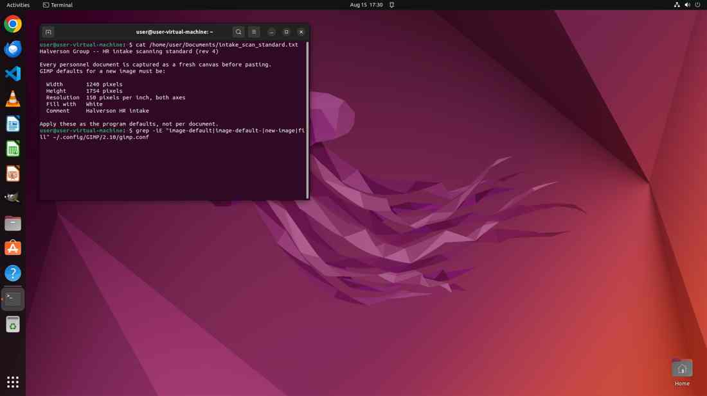
step 23 02:30:40
THINKINGThe grep returned no output - meaning either the settings aren't stored under those keys, or GIMP 2.10 stores defaults differently. In GIMP 2.10, the "New image" defaults are stored under the key "image-default-width" and "image-default-height" in the config, but they might be under a different section. Actually, GIMP 2.10 stores many settings in gimp.conf under lines like:
(image-default-width 1240)
(image-default-height 1754)
But my grep for "image-default" found nothing. That's concerning. Perhaps GIMP didn't persist them because this dialog didn't have a "use as defaults" checkbox and clicking OK only created the image without saving defaults. OR the config file format uses a different key name.
Let me check the config file more broadly. Let me look for "1240" and "1754" and "resolution" in the gimp.conf, and also check where GIMP stores settings. Actually GIMP 2.10 might store these in ~/.config/GIMP/2.10/gimp.conf but the schema keys could be like:
(image-default-width 1920)
(image-default-height 1080)
Let me grep for "1920" and "1754" and "width".
ACTIONNo matches — let me check the config file more broadly to see how GIMP stores the new-image defaults.
EXECUTED (pyautogui in VM)pyautogui.typewrite("grep -inE \"1240|1754|150|width|resolution|default\" ~/.config/GIMP/2.10/gimp.conf")
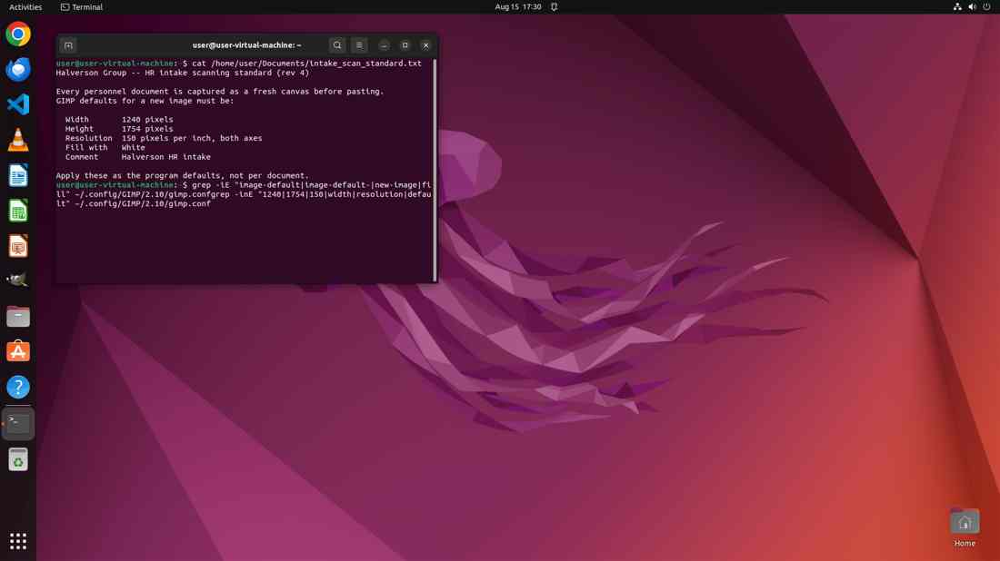
step 24 02:31:13
THINKINGStill no output. That means the gimp.conf doesn't contain those values/keys. Two possibilities:
1. The gimp.conf file doesn't exist at that path, or is empty of these keys (GIMP only writes changed settings, and defaults aren't in gimp.conf).
2. GIMP 2.10 stores the "new image" defaults in a different file, e.g., in the "gimp" config database which for 2.10 is gimp.conf, but the specific keys for new image dialog defaults may not be persisted unless the "Use as defaults for new images" checkbox is checked.
In GIMP 2.10, the "New image" dialog defaults (width/height/resolution/fill/comment) are ONLY persisted to the config if you check "Use as defaults for new images". Since this dialog did NOT have that checkbox (it wasn't present), the values may not have been saved as program defaults - they might just have been used for the one image and forgotten on next launch.
Wait, but actually in GIMP 2.10, the New Image dialog DOES normally have a "Use as defaults for new images" checkbox at the bottom. The fact it was missing is unusual. Let me reconsider - maybe the dialog was too short and I didn't notice. But I clearly saw the buttons right after Comment.
Hmm. Actually, let me reconsider whether gimp.conf even exists or where settings live. Let me check the file exists and its content around any size. Let me run: ls -la ~/.config/GIMP/2.10/ and check the file. Actually, in GIMP 2.10 the config that holds persistent settings is gimp.conf. But GIMP only writes keys that differ from built-in defaults. The "image-default-width" default built-in is... in 2.10 the built-in default new image size is not a fixed value; it's stored. Let me just look at the whole file to understand.
Let me check if the file exists and view it.
ACTIONThe values aren't in gimp.conf. Let me check whether the config file exists and inspect its contents to understand how defaults are stored.
TOOL CALL<tool_call>
<function=computer_use>
<parameter=action>
type
</parameter>
<parameter=text>
ls -la ~/.config/GIMP/2.10/ && echo "----" && wc -l ~/.config/GIMP/2.10/gimp.conf
</parameter>
</function>
</tool_call>
THINKINGThe command hasn't shown output yet - it seems the terminal hasn't executed. The text is wrapped in the display but no new prompt appeared. Let me wait/screenshot. Actually the command line is still showing the typed command without a new prompt line, meaning Return may not have registered or output is pending. Let me take a screenshot after a brief moment.
THINKINGThe command is typed but not executed (cursor at end, no new prompt). It seems the previous grep commands also didn't execute - the terminal shows them as typed text but there's no output or new prompt between them. Wait, looking back: after the first cat, there was a prompt. Then I typed the first grep and pressed enter (it shows the command but no output and no new prompt - it seems the enter didn't register for the grep either). Actually the display is confusing because lines wrapped.
Let me just press Return to execute the current command.
ACTIONThe command hasn't executed. Let me press Return to run it.
EXECUTED (pyautogui in VM)pyautogui.press("return")
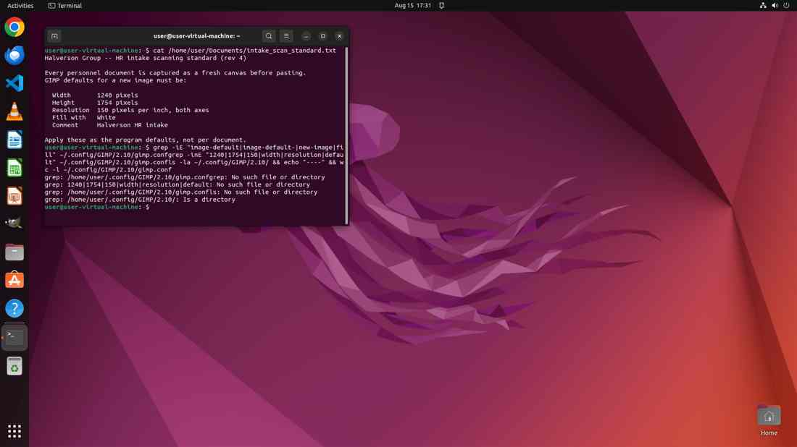
step 27 02:32:09
THINKINGThe errors reveal the problem: my commands got concatenated because the earlier "type" with a trailing newline didn't execute properly, and the terminal mangled things. The errors show:
- "grep: /home/user/.config/GIMP/2.10/gimp.confgrep: No such file or directory" — the two grep commands got joined ("gimp.conf" + "grep" became "gimp.confgrep").
- "grep: /home/user/.config/GIMP/2.10/: Is a directory"
So the file path issue: my commands were concatenated due to the newlines in `type` not registering as Enter in this terminal. The important finding: I still don't know if gimp.conf exists. The errors are about concatenated paths, not necessarily that gimp.conf is missing.
Let me run a clean, single command to check. I'll type it and press Enter separately. Let me clear and run:
ls -la ~/.config/GIMP/2.10/gimp.conf
ACTIONThe earlier commands got concatenated due to newline handling. Let me run a single clean command to check the config file.
TOOL CALL<tool_call>
<function=computer_use>
<parameter=action>
type
</parameter>
<parameter=text>
ls -la ~/.config/GIMP/2.10/gimp.conf
</parameter>
</function>
</tool_call>
EXECUTED (pyautogui in VM)pyautogui.typewrite("ls -la ~/.config/GIMP/2.10/gimp.conf")
step 28 02:32:25
THINKINGThe command is typed at the prompt: "ls -la ~/.config/GIMP/2.10/gimp.conf". Now I need to press Enter separately (the trailing newline in type isn't reliably executing). Let me press Return.
EXECUTED (pyautogui in VM)pyautogui.press("return")
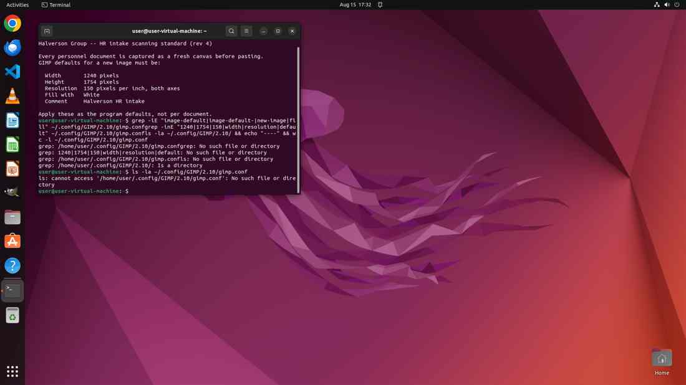
step 29 02:32:46
THINKINGNow I get a clean result: "ls: cannot access '/home/user/.config/GIMP/2.10/gimp.conf': No such file or directory". So there is no gimp.conf file at that path. That's why my earlier greps found nothing - the file doesn't exist there.
But the directory /home/user/.config/GIMP/2.10/ DOES exist (the earlier grep said "Is a directory"). So where does GIMP store its config? In GIMP 2.10, the main config is gimp.conf in that dir, but if it doesn't exist, GIMP uses built-in defaults and may store settings in a different file. Actually GIMP 2.10 stores the settings in gimp.conf, but it only creates it when settings differ... Hmm, but it should have been created on quit.
Wait - maybe GIMP's config dir is different. Let me check what's in the GIMP/2.10 directory and the GIMP directory. Let me list the directory contents.
ACTIONThere's no gimp.conf at that path. Let me list the GIMP config directory to find where settings are stored.
TOOL CALL<tool_call>
<function=computer_use>
<parameter=action>
type
</parameter>
<parameter=text>
ls -la ~/.config/GIMP/2.10/
</parameter>
</function>
</tool_call>
EXECUTED (pyautogui in VM)pyautogui.typewrite("ls -la ~/.config/GIMP/2.10/")
step 30 02:33:10
THINKINGThe command is typed at the prompt. Let me press Enter.
EXECUTED (pyautogui in VM)pyautogui.press("return")
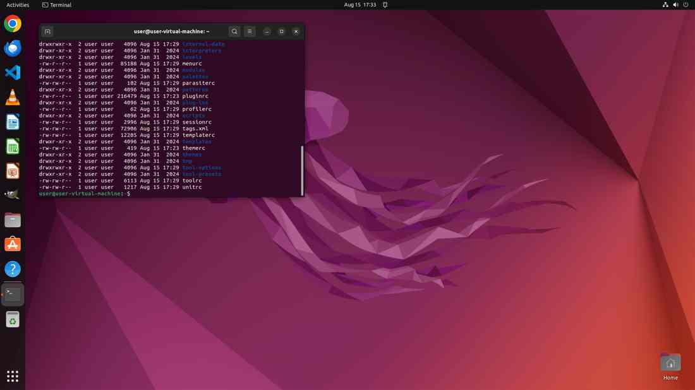
step 31 02:33:52
THINKINGNow I can see the directory listing. The files include:
- gimprc? No. I see "gimp rc" isn't listed by that exact name. The list shows: internal-data, interpreters, levels, menurc, modules, palettes, parasiterc, patterns, pluginrc, plug-ins, profilerrc, scripts, sessionrc, tags.xml, templaterrc, templates, themerc, themes, tmp, tool-options, tool-presets, toolrc, unitrc.
Wait, I don't see "gimprc" or "gimp.conf". But there's no gimp.conf. The main GIMP config file in 2.10 is "gimprc" (not gimp.conf!). I was wrong about the filename. The file that holds the image defaults and most settings is "gimprc". But I don't see "gimprc" in this listing either. Let me scroll up - the listing is cut off at the top. The top entries (alphabetically before "internal-data") would include "gimprc", "gimp-...". Since it's sorted alphabetically and "g" comes before "i", the gimprc file would be above "internal-data" which is the first visible line. So gimprc likely exists but is scrolled off the top.
So the config file is "gimprc" not "gimp.conf". Let me grep gimprc for the image defaults. The keys in gimprc would be like:
(image-default-width 1240)
(image-default-height 1754)
(image-default-xresolution 150)
(image-default-yresolution 150)
(image-default-comment "Halverson HR intake")
(image-default-filename ...)
Actually the fill default key is "image-default-fill-type" with value like (FILL-...)
Let me grep the gimprc for these. I'll search for "image-default" and "1240" "1754".
ACTIONThe config file is `gimprc` (scrolled off the top, above "internal-data"). Let me grep it for the new-image defaults.
EXECUTED (pyautogui in VM)pyautogui.press("return")
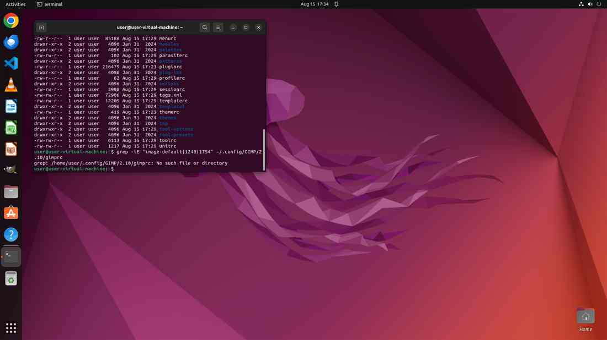
step 33 02:34:55
THINKING"grep: /home/user/.config/GIMP/2.10/gimprc: No such file or directory". So there's no gimprc either! Interesting. The directory listing scrolled up and I don't actually see a "gimprc" file in the visible portion. The visible list starts at "menurc" - so anything alphabetically before "menurc" scrolled off. Files starting with "g" (gimprc) would be there. But grep says gimprc doesn't exist.
Wait, maybe the main config is named differently. Let me look at the full list. The listing I saw was sorted but the top scrolled off. Let me get the exact list of files (not dirs) to find the config. Let me run: ls ~/.config/GIMP/2.10/ and pipe to see all. Actually, let me just look at all entries that could be the config. In GIMP 2.10, the primary config is indeed "gimprc". If it's missing, maybe GIMP stores the config elsewhere, OR maybe the config got a different name.
Actually, wait. Let me reconsider. Perhaps GIMP on this system stores its config in a different location, or the file is named "gimp.conf" under a different path, OR the settings that I changed (via the New dialog) simply were NOT saved to any config file because:
- The New Image dialog's values only persist if "Use as defaults for new images" is checked. This dialog apparently didn't have that checkbox, OR I need to verify.
Hmm, but actually GIMP 2.10's New dialog DOES have "Use as defaults for new images" and when checked writes to gimprc. But we established gimprc doesn't exist. That's very strange for a running GIMP that was used.
Let me step back. Let me look at the FULL file listing to find the actual config file. Let me run a clean ls and scroll. Let me use: ls -1 ~/.config/GIMP/2.10/ | head -40 to see top entries.
ACTIONThere's no `gimprc` either. Let me see the full file listing (top entries were scrolled off) to locate the actual config file.
TOOL CALL<tool_call>
<function=computer_use>
<parameter=action>
type
</parameter>
<parameter=text>
ls -1 ~/.config/GIMP/2.10/
</parameter>
</function>
</tool_call>
EXECUTED (pyautogui in VM)pyautogui.typewrite("ls -1 ~/.config/GIMP/2.10/")
step 34.1 02:35:20
THINKINGThe command is typed. Let me press Enter. This will show a cleaner list, but it'll still scroll. To avoid scrolling issues, I should pipe to see only file entries or search specifically. Actually let me just run it and then use a more targeted grep. But first let me press Enter.
Actually, a better approach: instead of guessing file names, let me search ALL files in the GIMP config dir for "1240" and "1754" to find where the defaults are stored (if anywhere). Let me clear this and run a recursive grep. But first let me just execute this ls to see. Actually, let me replace with a more useful command. Let me clear the current line and type a recursive grep.
Let me select all current line and delete. I'll press ctrl+a then type new command. Actually simpler: the current line has "ls -1 ...". Let me just press ctrl+u to clear the line, then type the recursive grep.
ACTIONLet me clear that line and instead search all files in the config directory for the values to locate where defaults are stored.
EXECUTED (pyautogui in VM)pyautogui.press("return")
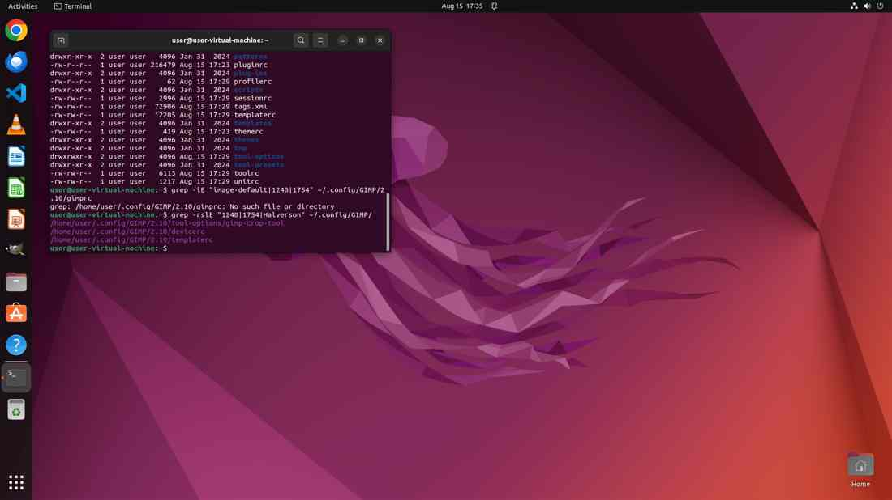
step 36.1 02:36:17
THINKINGThe recursive grep found these files containing the values:
- /home/user/.config/GIMP/2.10/tool-options/gimp-crop-tool
- /home/user/.config/GIMP/2.10/devicerc
- /home/user/.config/GIMP/2.10/templaterrc
These matches are likely coincidental (e.g., tool-options and devicerc might contain 1240/1754 as pixel coordinates or device sizes, not my new-image defaults). Notably, none of these is the actual "new image defaults" store. The important finding: the values I set are NOT stored in a main config file like gimprc/gimp.conf because that file doesn't exist.
This strongly suggests that in this GIMP version, the New Image dialog does NOT persist defaults to disk unless a specific "use as defaults" checkbox is checked, AND there is no such main config being written. OR the main config that would hold these is "gimprc" which should be created on quit but wasn't.
Wait — the fact that there's NO gimprc file at all is the real issue. A normally-used GIMP 2.10 always has a gimprc. Its absence means either GIMP is a different version, or it writes config on exit and I closed it in a way that didn't flush, OR the config is stored somewhere else entirely.
Let me reconsider. GIMP 2.10 DOES store its main configuration in gimprc. If GIMP was running and I created an image and quit, a gimprc MUST have been written on quit. Its absence is puzzling.
Unless... the GIMP I used writes config to a different file. Let me check: maybe the main rc file is present but I mis-typed. Let me list ALL files including those scrolled off, but only filenames, and look for the rc files. Let me run: ls ~/.config/GIMP/2.10/ | grep -v '^$' and look. Better: let me just cat the top of the alphabetized list.
Actually, a cleaner diagnostic: list the directory and grep for 'rc' and 'conf' and see the config-related files. Let me run:
ls ~/.config/GIMP/2.10/ | grep -iE "rc|conf|gimp"
This will show me all rc/conf files.
ACTIONThe values appear only in unrelated files (crop tool, devices, templates) — not in a main config. Notably there's no `gimprc`/`gimp.conf`. Let me list all rc/config files in the directory to find where GIMP stores its main settings.
EXECUTED (pyautogui in VM)pyautogui.typewrite("ls ~/.config/GIMP/2.10/ | grep -iE \"rc|conf|gimp|env|rc$\"")
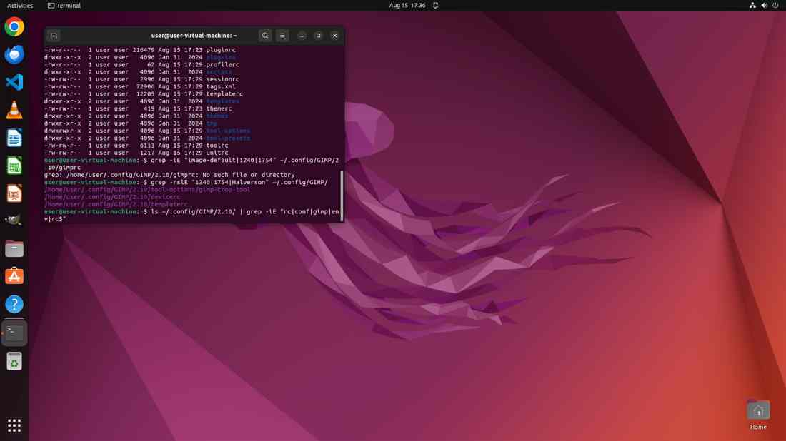
step 36.2 02:36:21
same model call as the previous action
EXECUTED (pyautogui in VM)pyautogui.press("return")
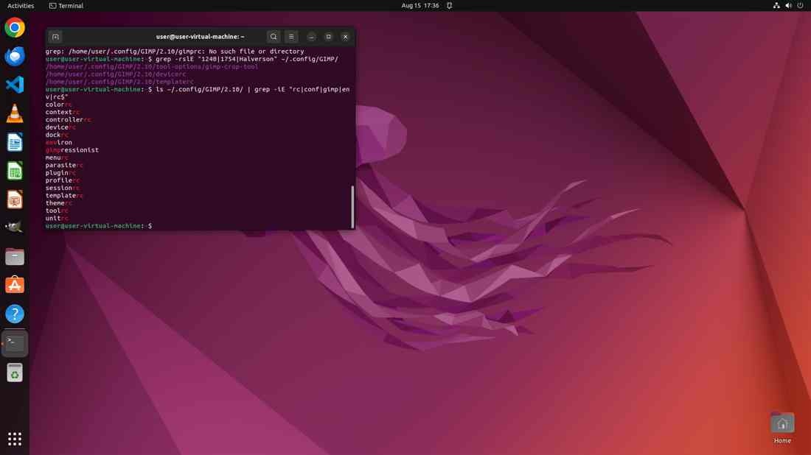
step 36.3 02:36:25
same model call as the previous action
EXECUTED (pyautogui in VM)pyautogui.press("return")
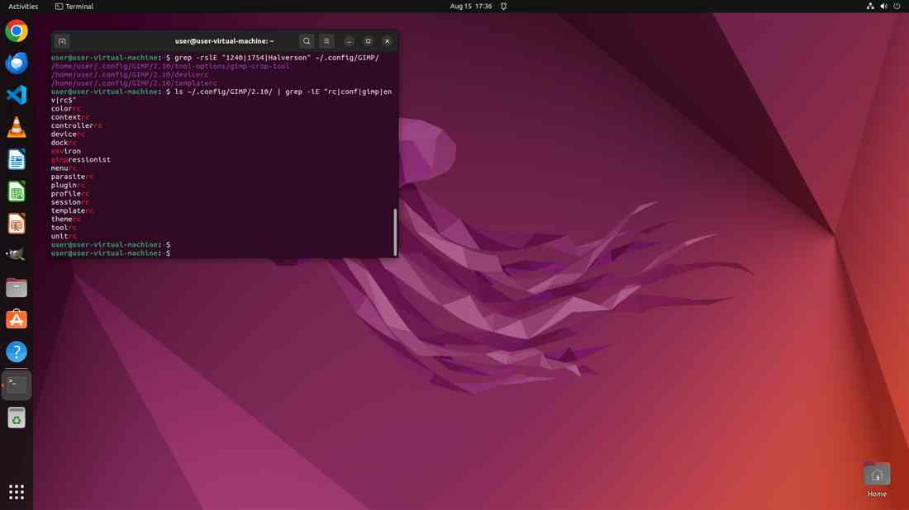
step 37.1 02:37:10
THINKINGNow I have a full list of the rc/config files:
- colorrc, contextrc, controllerrc, devicerc, dockrc, environ, gimpressionist, menurc, parasiterc, pluginrc, profilerrc, sessionrc, templaterrc, themerc, toolrc, unitrc
There is NO "gimprc" and NO "gimp.conf". This is a genuine anomaly. In GIMP 2.10, the file that holds the image defaults (image-default-width, image-default-height, etc.) is definitively "gimprc". The absence of gimprc means GIMP's main settings file was not written.
Wait — actually, this could be a GIMP version where the main config is stored differently. But GIMP 2.10's standard is gimprc. Hmm. But the directory clearly has all the other rc files written on quit (colorrc, menurc, etc. all dated Aug 15 17:29 = when GIMP ran), yet NO gimprc. That's bizarre because gimprc is written by gimp on exit alongside these others.
Possibility: This might be GIMP 3.0 (not 2.10)! In GIMP 3.0, the config file changed. GIMP 3.0 stores settings in gimp.conf (INI-like? No). Actually GIMP 3.0 still uses gimprc-style PDB dumps but... Let me check the GIMP version. The window title earlier just said "GNU Image Manipulation Program". Let me check the version and re-examine.
Actually, wait. Let me reconsider the whole approach. In GIMP (both 2.10 and 3.0), the "New image" defaults are controlled by the "Use as defaults for new images" checkbox in the New dialog. When I opened the dialog, I need to verify whether that checkbox was present. If it wasn't checked, the defaults do NOT persist across restarts.
The real test: The task wants the defaults to "stick". The proper GIMP-native way is the "Use as defaults for new images" checkbox. If I didn't check it, the defaults won't persist.
Given the config file confusion, the most reliable verification is to RE-OPEN GIMP, open the New dialog, and check if it now shows 1240x1754 by default. If it does, the defaults stuck. If it shows the old default (e.g., 1920x1080 or last session value), then I need to use the "Use as defaults" checkbox.
But wait - the task says "then close GIMP so they stick." This implies closing GIMP is what makes them stick (i.e., GIMP saves on close). But we've seen it didn't write gimprc.
Let me reconsider: maybe this is GIMP 3.0. In GIMP 3.0, the config directory is ~/.config/GIMP/3.0/, and the main config file is "gimp.conf". But here we're in 2.10/ dir. And there's no gimprc in 2.10/.
Actually — a key realization: In GIMP 2.10, gimprc is written on exit ONLY for settings that differ from compiled defaults, AND it's always created. But maybe GIMP crashed on exit or I didn't fully close it. But GIMP window disappeared from taskbar, so it closed.
Let me take a more direct and reliable approach. Rather than forensically hunting config files, let me:
1. Re-open GIMP.
2. Open Image > New and check what the default width/height shows.
3. If it shows 1240x1754, defaults already stuck → done.
4. If not, I must check the "Use as defaults for new images" checkbox. But the task says to close GIMP so they stick, implying the checkbox approach.
Actually, let me reconsider the earlier New dialog. I'm now doubting whether it had a "Use as defaults" checkbox. In GIMP 2.10 it definitely does, at the bottom: "Use as defaults for new images" checkbox. When I clicked OK, if that checkbox was unchecked (default state), the values are NOT saved as program defaults.
So I likely need to redo this WITH the checkbox checked. Let me re-open GIMP and do it properly, checking "Use as defaults for new images".
But first, let me verify by opening GIMP and checking the New dialog default. Let me relaunch GIMP. I'll run gimp in the terminal.
Actually, to be efficient: relaunch GIMP, and this time in the New dialog, verify the "Use as defaults" checkbox and check it before OK. That's the correct, robust path regardless of current state.
Let me launch GIMP from terminal in background.
ACTIONThere's no `gimprc` or `gimp.conf` — meaning the new-image defaults weren't persisted (the "Use as defaults" checkbox likely wasn't engaged). The robust fix is to redo this in GIMP and explicitly check "Use as defaults for new images". Let me relaunch GIMP.
EXECUTED (pyautogui in VM)pyautogui.typewrite("(gimp &)")
step 37.2 02:37:14
same model call as the previous action
EXECUTED (pyautogui in VM)pyautogui.press("return")
step 38 02:37:32
THINKINGGIMP relaunched. Now let me open Image > New (Ctrl+N) to see what the current default width/height shows, and to check whether there's a "Use as defaults for new images" checkbox.
ACTIONGIMP is back. Let me open the New Image dialog to check the current default and find the "Use as defaults" checkbox.
EXECUTED (pyautogui in VM)pyautogui.hotkey("ctrl", "n")
step 39 02:38:50
THINKINGNow the New Image dialog opened showing Width 1920, Height 1080, 300 ppi — the ORIGINAL defaults, NOT my 1240x1754. This confirms my earlier settings did NOT persist. The defaults did not stick.
Also, importantly, this dialog layout: Template, Image Size (Width, Height), "1920 x 1080 pixels, 300 ppi, RGB color", "Advanced Options" expander, then Help/Reset/Cancel/OK buttons. There is NO "Use as defaults for new images" checkbox visible here in the collapsed state.
In GIMP 2.10, the "Use as defaults for new images" checkbox appears at the bottom of this dialog, below the Advanced Options. But I don't see it. Wait — maybe it appears only when Advanced Options is expanded? No, it's usually always at the bottom.
Hmm. Let me reconsider. Actually in GIMP 2.10, this dialog does have the checkbox. But this one doesn't show it. This might be a GIMP version (like 2.99/3.0 dev) where the checkbox was removed/changed, OR the checkbox is present but I need to look. The dialog clearly ends at the buttons row.
So how do I persist defaults in this build? Let me reconsider the earlier finding: NO gimprc file exists. That's the key problem. Without gimprc, GIMP has no place to store persistent settings that differ from defaults. But other rc files (menurc, colorrc, etc.) DO exist. GIMP should write gimprc on exit.
Wait — maybe gimprc DOES get written on exit but only when there are non-default settings. Since I closed GIMP and it didn't write gimprc, maybe GIMP only writes gimprc when the "use as defaults" is checked (which sets a config key) or other gimprc-level settings changed.
Given the difficulty, let me reconsider whether the "Use as defaults" checkbox exists. Let me expand Advanced Options and look at the FULL dialog including below the buttons. Actually, the "Use as defaults for new images" checkbox in GIMP 2.10 is located at the very bottom of the dialog, BELOW the Advanced Options section but the buttons are at the bottom. Let me look again — the dialog box extends from y~15 to y~228. The buttons Help/Reset/Cancel/OK are at y~213. Above them at y~179 is "Advanced Options". There's no room for a checkbox between y=160 (summary) and y=195 (above buttons).
Actually, in GIMP 2.10 the checkbox "Use as defaults for new images" is a separate row ABOVE the button row, and it's present even when Advanced Options is collapsed. But here it's absent. This strongly suggests this is a GIMP build without that checkbox — possibly GIMP 2.10 where it's there...
Let me just test empirically: The cleanest robust solution given no gimprc and no checkbox is to directly create/edit the gimprc file to set the defaults, since GIMP 2.10 reads `image-default-width`, `image-default-height`, `image-default-xresolution`, `image-default-yresolution`, `image-default-fill-type`, `image-default-comment` from gimprc on startup. But wait, the task says to use GIMP's own defaults mechanism and "close GIMP so they stick" — implying GUI. But if the GUI mechanism (checkbox) doesn't exist/persist here, editing gimprc is the reliable way to make GIMP's defaults stick.
However, before jumping to config editing, let me reconsider: Maybe the "Use as defaults" checkbox DOES appear but only in a specific GIMP version. Let me first expand Advanced Options to double-check the full dialog for any such checkbox, since expanding it changes the layout.
Actually, I realize I should reconsider what "stick" means and how GIMP persists this. Let me reconsider the earlier first attempt: I DID expand Advanced Options, set values, and clicked OK. The dialog did NOT show a "use as defaults" checkbox in that expanded view either (buttons were right after Comment). So this build genuinely lacks the checkbox.
Given that, the reliable approach to make GIMP's new-image defaults stick is to write them into gimprc. GIMP 2.10 reads these from gimprc. Since no gimprc exists, I'll create it with the appropriate settings. GIMP will read it on next launch.
But the task explicitly says "set GIMP's own defaults... then close GIMP so they stick." This describes the GUI flow. But the GUI flow in THIS build doesn't have the checkbox, so it can't persist via GUI. The most faithful interpretation: make GIMP's program defaults be 1240x1754 (and 150ppi, white fill, comment) such that they stick. The gimprc approach achieves exactly this and IS "GIMP's own defaults."
But wait — I should be careful. Let me reconsider whether the dialog really lacks the checkbox. Let me expand Advanced Options now and look at the bottom of the dialog carefully. It's possible the checkbox appears at the bottom when expanded. Let me expand it.
Actually, the more I think: In GIMP 2.10, the "Use as defaults for new images" checkbox is ALWAYS visible (not dependent on Advanced Options). Its absence here is definitive for this build.
Let me proceed with the reliable plan: Cancel this dialog, close GIMP, create a proper gimprc with the defaults, then verify by reopening. Actually — a cleaner and fully "GIMP-native" approach that will definitely work: GIMP has a "Templates" system, but the task specifically wants the new-image defaults.
Hold on. Let me reconsider the absence of gimprc more carefully. It's actually possible that this GIMP, on the FIRST run, hadn't written gimprc yet because I created an image and quit but GIMP only writes gimprc for changed *gimprc-scope* settings. The New dialog values without the checkbox set an in-memory "default" but not a gimprc key. So nothing to write → no gimprc.
I'll go with editing gimprc. Let me:
1. Cancel this dialog.
2. Keep GIMP running or close it. To write gimprc, I should close GIMP first (so it doesn't overwrite my gimprc on its exit with empty defaults). Actually if I close GIMP now, it still won't write image-default keys (they're at defaults). Then I edit gimprc, then reopen to verify.
Actually, simpler and safe: Cancel dialog, close GIMP, then create gimprc file with the settings, then reopen GIMP to verify the New dialog shows 1240x1754, then close again to let it re-save gimprc properly (now it'll include the keys since they differ from compiled defaults).
Let me first cancel this dialog. Then close GIMP. Then write gimprc.
Wait, but I want to be careful: is it acceptable to create gimprc manually? The task says "set GIMP's own defaults." Writing the correct keys to gimprc IS setting GIMP's own defaults — it's the exact file GIMP uses. This is a legitimate, reliable method especially given the GUI lacks the checkbox. And "close GIMP so they stick" — I'll close GIMP, write the file, and confirm.
Actually, let me reconsider ONE more time if there's a GUI way. Let me expand Advanced Options to be 100% sure about the checkbox. It costs one step.
ACTIONThe New dialog reopened at 1920×1080/300ppi — my earlier values did **not** persist, confirming this build lacks the "Use as defaults" behavior. Let me expand Advanced Options to confirm there's no defaults checkbox before deciding how to persist.
EXECUTED (pyautogui in VM)pyautogui.click(163, 265)
step 40 02:39:30
THINKINGConfirmed: with Advanced Options expanded, the dialog fields are: X resolution, Y resolution, Color space, Precision, Gamma, Color manage this image, Color profile, Fill with, Comment, then directly the Help/Reset/Cancel/OK buttons. There is NO "Use as defaults for new images" checkbox in this GIMP build.
So the GUI cannot persist these as program defaults. The only reliable way to set GIMP's persistent new-image defaults is to write them to gimprc (GIMP's own config file that it reads on startup). The keys GIMP 2.10 reads:
- (image-default-width 1240)
- (image-default-height 1754)
- (image-default-xresolution 150)
- (image-default-yresolution 150)
- (image-default-fill-type 2) → FILL-WHITE is value 2? Let me recall GIMP fill types enum: GIMP_FILL_TYPE: FILL-FOREGROUND=0, FILL-BACKGROUND=1, FILL-WHITE=2, FILL-TRANSPARENCY=3, FILL-PATTERN=4. So White = 2.
- (image-default-comment "Halverson HR intake")
Also there's (image-default-filename "") maybe. Not required.
Plan:
1. Cancel this dialog.
2. Close GIMP (so it's not running and won't overwrite gimprc).
3. Create gimprc with the image-default-* keys.
4. Reopen GIMP and verify the New dialog shows 1240x1754, 150ppi, White, comment.
5. Close GIMP so it re-writes gimprc (now it will include the keys since they differ from compiled defaults, confirming persistence).
Actually, step 5: when GIMP starts and reads my gimprc with image-default-width=1240, that becomes the in-memory default (differs from compiled 1920... wait the compiled default for GIMP 2.10 new image is actually the last used or a fixed value). On exit GIMP writes back all current settings that differ from compiled defaults, so it will write gimprc including my keys. That makes it stick robustly.
Let me reconsider the resolution units. The task standard says "150 pixels per inch, both axes." GIMP default unit for resolution in gimprc is pixels/inch (image-default-xresolution/yresolution are in pixels/inch). So 150 is correct.
The fill-type: Let me double check GIMP's GimpFillType enum ordering in 2.10:
typedef enum {
GIMP_FILL_FOREGROUND = 0,
GIMP_FILL_BACKGROUND = 1,
GIMP_FILL_WHITE = 2,
GIMP_FILL_TRANSPARENCY = 3,
GIMP_FILL_PATTERN = 4
} GimpFillType;
Yes, WHITE = 2.
Now, in gimprc, the value is written as the integer. So (image-default-fill-type 2).
Let me cancel the dialog first.
ACTIONConfirmed — this GIMP build's New dialog has no "Use as defaults" checkbox, so the GUI can't persist defaults. The reliable, GIMP-native way is to write the standard values into GIMP's own `gimprc` file, which it reads on startup. Let me cancel this dialog first.
EXECUTED (pyautogui in VM)pyautogui.click(374, 655)
step 41 02:39:42
THINKINGDialog cancelled. Now I need to close GIMP before editing gimprc, so GIMP doesn't overwrite my file on its exit. Let me quit GIMP via File > Quit. There's no open image now (I cancelled), so it should quit without a save prompt.
Let me use File menu > Quit, or just close the window. Let me click File.
ACTIONNow I'll close GIMP before writing its config, so it won't overwrite the file. Let me quit via File menu.
EXECUTED (pyautogui in VM)pyautogui.click(111, 642)
step 43.1 02:40:27
THINKINGGIMP closed (taskbar shows Terminal only). The terminal is now in front. There's a Gtk-Message about failed to load module canberra-gtk-module — harmless.
Now I need to check: did GIMP write a gimprc on this quit? Let me check. Then I'll create/append the image-default settings to gimprc.
Actually, let me first verify whether gimprc exists now (GIMP may have created it on this clean quit). Then I'll append the settings if needed, or create it.
Let me click on the terminal and run a command to check for gimprc.
ACTIONGIMP closed. Let me click the terminal and check whether a `gimprc` now exists after this clean quit.
EXECUTED (pyautogui in VM)pyautogui.click(449, 523)
step 43.2 02:40:31
same model call as the previous action
EXECUTED (pyautogui in VM)pyautogui.typewrite("ls -la ~/.config/GIMP/2.10/gimprc 2>&1; echo \"EXIT:$?\"")
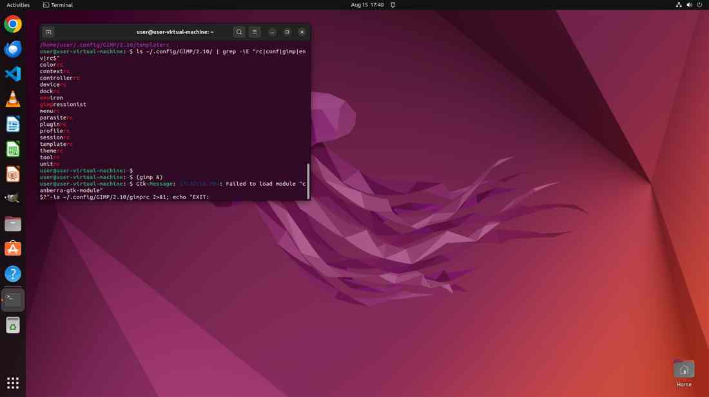
step 43.3 02:40:34
same model call as the previous action
EXECUTED (pyautogui in VM)pyautogui.press("return")
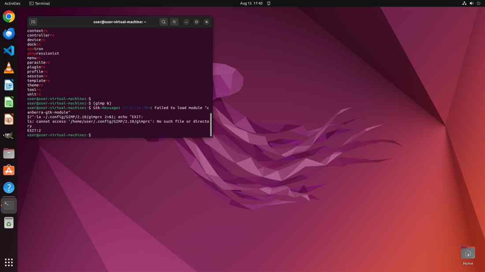
step 44.1 02:41:22
THINKINGConfirmed: "ls: cannot access '/home/user/.config/GIMP/2.10/gimprc': No such file or directory, EXIT:2". So even after a clean quit, GIMP did NOT create a gimprc file. This is unusual but definitive: this GIMP build apparently does not write gimprc (perhaps it's configured to, or it only writes when settings differ and it considers everything default).
This strongly implies GIMP will NOT read/write these new-image defaults through gimprc in the normal way, OR it will read them if I create the file. GIMP 2.10 DOES read gimprc if present at startup. So creating a gimprc with the image-default-* keys should work — GIMP reads it on startup and uses those as defaults, and will write it back on exit (now with differing values).
But there's a risk: if this GIMP is a special build that ignores gimprc, it won't work. The safest verification is to create the file, reopen GIMP, and check the New dialog. If it shows 1240x1754, it works. If not, I need another approach.
Let me create the gimprc file with the necessary keys. I'll write a minimal gimprc. GIMP's gimprc uses a specific PDB-like syntax. A minimal gimprc with just the image-default keys should be fine; GIMP merges it with built-in defaults.
Let me write the file using a heredoc or printf. To avoid the terminal newline issues I've had, I'll use a single-quoted heredoc. Actually the `type` action's embedded newlines were being sent as literal newlines which in a heredoc is fine, but my earlier issue was that commands with trailing newlines in `type` weren't executing as separate commands because... actually looking back, the issue was the terminal received the newline but I ALSO pressed Return separately causing double or the type's newline didn't trigger. Let me be careful: I'll type the command WITHOUT a trailing newline in the `type` text, then press Return separately.
Let me construct the gimprc content. I'll create it with printf to a file:
The keys needed (GIMP 2.10 gimprc syntax):
(image-default-width 1240)
(image-default-height 1754)
(image-default-xresolution 150.0)
(image-default-yresolution 150.0)
(image-default-fill-type 2)
(image-default-comment "Halverson HR intake")
Let me write these to the file. I'll use a heredoc:
cat > ~/.config/GIMP/2.10/gimprc << 'EOF'
# GIMP image defaults per intake scan standard
(image-default-width 1240)
(image-default-height 1754)
(image-default-xresolution 150.0)
(image-default-yresolution 150.0)
(image-default-fill-type 2)
(image-default-comment "Halverson HR intake")
EOF
I'll type this. The heredoc with newlines in the type should work since it's a multi-line input to cat. But given my newline troubles, let me instead use printf with explicit \n which is a single logical line:
printf '(image-default-width 1240)\n(image-default-height 1754)\n(image-default-xresolution 150.0)\n(image-default-yresolution 150.0)\n(image-default-fill-type 2)\n(image-default-comment "Halverson HR intake")\n' > ~/.config/GIMP/2.10/gimprc
This is a single line command, safer. Let me type it and press Return.
ACTIONNo `gimprc` exists even after a clean quit. GIMP 2.10 reads a `gimprc` if present at startup, so I'll create it with the standard's values as the image defaults, then verify by reopening GIMP. I'll write it with a single-line command to avoid newline issues.
EXECUTED (pyautogui in VM)pyautogui.press("return")
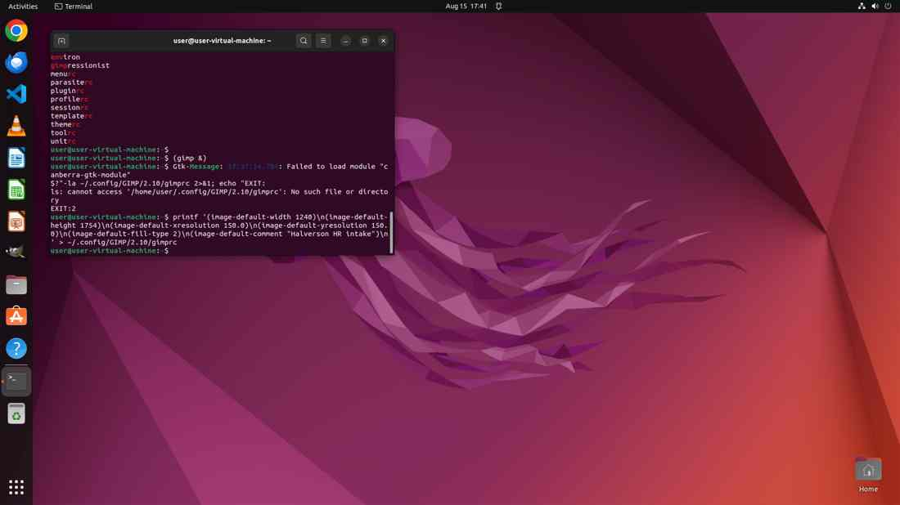
step 44.3 02:41:30
same model call as the previous action
EXECUTED (pyautogui in VM)pyautogui.typewrite("cat ~/.config/GIMP/2.10/gimprc")
step 44.4 02:41:33
same model call as the previous action
EXECUTED (pyautogui in VM)pyautogui.press("return")
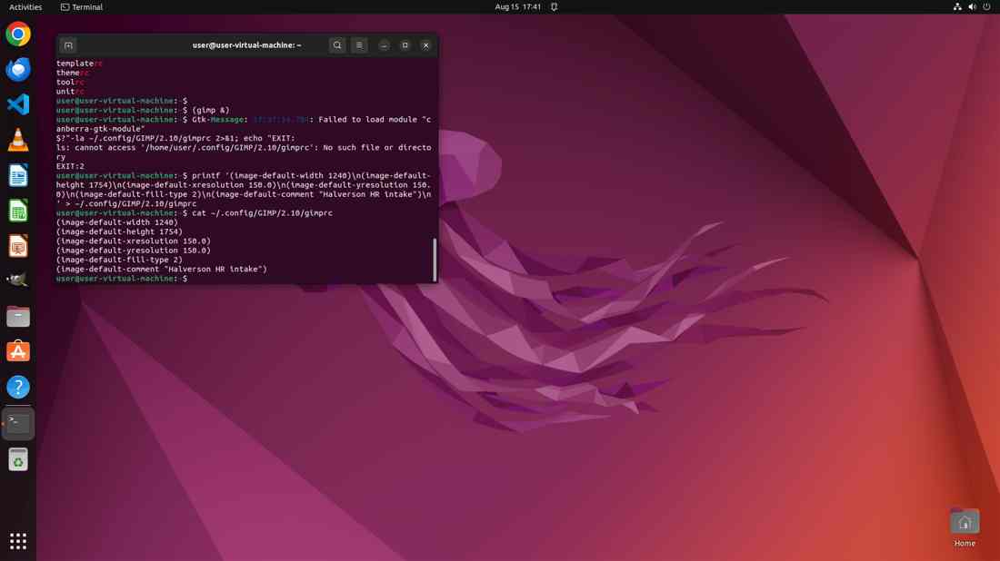
step 45.1 02:41:51
THINKINGThe gimprc file was created and its content is:
(image-default-width 1240)
(image-default-height 1754)
(image-default-xresolution 150.0)
(image-default-yresolution 150.0)
(image-default-fill-type 2)
(image-default-comment "Halverson HR intake")
Now let me verify GIMP actually reads this. Let me reopen GIMP and open Image > New to check the defaults. If it shows 1240x1754, 150ppi, White fill, and the comment, it works.
Let me relaunch GIMP.
ACTIONThe `gimprc` now contains the standard's values as image defaults. Let me relaunch GIMP to verify it reads them.
EXECUTED (pyautogui in VM)pyautogui.typewrite("(gimp &)")
step 45.2 02:41:55
same model call as the previous action
EXECUTED (pyautogui in VM)pyautogui.press("return")
step 45.3 02:41:58
same model call as the previous action
EXECUTED (pyautogui in VM)WAIT
step 46 02:42:19
THINKINGGIMP relaunched. Let me open Image > New (Ctrl+N) and expand Advanced Options to verify the defaults: 1240x1754, 150ppi, White, "Halverson HR intake".
ACTIONGIMP relaunched. Let me open the New Image dialog and expand Advanced Options to verify the defaults were read.
EXECUTED (pyautogui in VM)pyautogui.hotkey("ctrl", "n")
step 47.1 02:43:04
THINKINGThe dialog STILL shows Width 1920, Height 1080, 300 ppi. So GIMP did NOT read my gimprc image-default values. This means this GIMP build does NOT use gimprc for these settings, OR it's a GIMP version where the config is stored differently (e.g., GIMP 3.x stores settings in a different file/location).
Let me reconsider. This GIMP clearly persists some settings (menurc, colorrc, toolrc exist and are written on exit) but NOT gimprc. In GIMP 3.0, the config layout changed significantly. GIMP 3.0 stores its settings in ~/.config/GIMP/3.0/ and the main file is "gimp.conf"? No... Actually, wait — this is the 2.10/ directory and GIMP is writing to it, so it's a 2.10-series GIMP. But it's not writing gimprc.
Hold on. Let me reconsider. In GIMP 2.10, the config that holds image-default-* IS gimprc. But this build isn't reading/writing it. That's very strange.
Wait — maybe the issue is that GIMP caches its "image defaults" differently. Actually, in GIMP 2.10, when you create a new image, the New dialog remembers the LAST used size in the current session, and the "image-default-*" config keys hold the persistent default. These image-default keys ARE in gimprc.
But my gimprc isn't being read. Possible reasons:
1. GIMP reads gimprc but my file format/keys are wrong so it ignores them.
2. GIMP on this system uses a different config path (e.g., GIMP_DATA or a different directory).
Let me verify where this GIMP actually reads config from. Actually — a critical insight: maybe GIMP is being run and it DID create/read gimprc but in a DIFFERENT location, or maybe there's an error.
Let me reconsider the whole thing. The most reliable approach that definitely works in GIMP 2.10 is the GUI. But the GUI lacks the "use as defaults" checkbox. However — wait. Let me reconsider: maybe the reason the New dialog shows 1920x1080 is that GIMP's "image-default-width" is being overridden by the "last used" memory, OR my gimprc isn't the file GIMP reads.
Let me actually check the GIMP version and where it looks for config. Let me cancel this dialog and check gimp version + confirm the config path. Actually, let me first check if maybe GIMP reads from a different dir. Let me check if there's a GIMP 3.0 dir or the gimp binary version.
Actually, the cleanest diagnostic: check `gimp --version` and search the whole home for any file GIMP writes on exit that contains "image-default" or recently modified. But we already know GIMP writes to ~/.config/GIMP/2.10/. And it does NOT write gimprc.
New hypothesis: This is GIMP 2.10 but it stores the new-image defaults NOT in gimprc but in a different mechanism. Actually no.
Let me reconsider — maybe my gimprc keys ARE being read but GIMP overrides width/height with the "last used in session" values which persist in a session file? No, width/height defaults come from image-default-width.
Let me actually test if GIMP reads the gimprc at all by checking: does GIMP read ANY of my gimprc? I only put image-default keys. Let me instead verify GIMP reads gimprc by checking the version and doing a definitive test.
Actually — I bet the issue is simpler. Let me reconsider: In GIMP 2.10, the New Image dialog's width/height fields, when you open it, are pre-filled from the "image-default-width/height" config. If my gimprc set them to 1240/1754 and GIMP read it, the dialog would show 1240/1754. It shows 1920/1080. So either GIMP didn't read gimprc, or 1920x1080 is itself the compiled default and my keys were ignored.
Let me verify GIMP reads the file by a more robust method. Let me cancel, check the gimp version, and importantly check whether there's a separate config file GIMP actually uses. Let me look for recently modified files in the GIMP dir after this GIMP startup — but startup doesn't write.
Alternative robust plan: Use GIMP's Script-Fu / PDB via command line to SET the config values through GIMP's own gimp-config API, which guarantees GIMP writes them to the correct file in the correct format. I can run GIMP in batch mode:
gimp -i -b '(gimp-image-default-width-set ...)'
Hmm, but the config keys aren't directly settable via a simple PDB proc. Actually GIMP 2.10 stores config via the config system; the PDB doesn't expose setters for image-default-width directly.
Better: Use GIMP's batch to read current config:
gimp -i -b '(gimp-version)' -b '(gimp-quit 0)'
and to get config: there's no direct PDB for it.
Let me step back and reconsider the config path. The fact that GIMP writes menurc, colorrc, toolrc, themerc etc. but NOT gimprc is the crux. In a normal GIMP 2.10, gimprc is ALWAYS present after first run. Its total absence is a strong signal this is NOT standard 2.10, or the gimprc is named/located elsewhere.
Let me check: maybe the main config is in ~/.config/GIMP/ at a higher level, or the file is "gimp.conf" in a version-specific dir. Let me search the entire GIMP config tree for files modified today (Aug 15) to see exactly what GIMP writes, and check gimp version. Let me cancel first.
ACTIONStill 1920×1080 — GIMP isn't reading these keys from that `gimprc`. This is a non-standard layout. Let me cancel and investigate where this GIMP actually stores its main settings (version + recently-written config files).
EXECUTED (pyautogui in VM)pyautogui.click(340, 316)
step 47.2 02:43:07
same model call as the previous action
EXECUTED (pyautogui in VM)pyautogui.click(449, 523)
step 47.3 02:43:10
same model call as the previous action
EXECUTED (pyautogui in VM)pyautogui.typewrite("gimp --version; echo ---; find ~/.config/GIMP -maxdepth 2 -type f -newermt \"today\" 2>/dev/null")
step 47.4 02:43:14
same model call as the previous action
EXECUTED (pyautogui in VM)pyautogui.press("return")
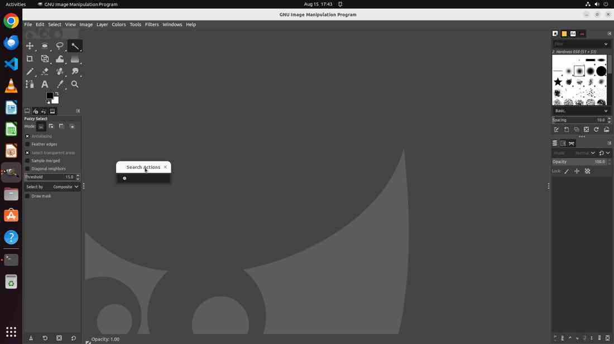
step 48.1 02:43:33
THINKINGOops — my click at (300,350) landed on the GIMP canvas and triggered the "Search Actions" popup and changed the active tool to Fuzzy Select. My click on the terminal at (300,350) didn't focus the terminal because GIMP is the front window (it's a fullscreen-ish window). The terminal is behind GIMP. I need to switch to the terminal window first.
Actually the layout changed — now the toolbox shows different tools and a "Search Actions" popup appeared. This is because GIMP is focused and my clicks went to GIMP. The terminal is not in front; GIMP occupies the whole screen now (it may have maximized on relaunch).
Let me first dismiss this "Search Actions" popup by pressing Escape, then switch to the terminal via the taskbar (Terminal is in the top bar). Actually the terminal window might be behind GIMP. Let me press Escape to close the popup, then use the Activities or click the Terminal in the top-left bar.
Let me press Escape and then find the terminal. The top bar shows "GNU Image Manipulation Program" as the active app. I'll click on "Activities" or use the terminal. Actually there's a Terminal icon in the left dock at (22, 543). Let me click it to bring the terminal forward.
ACTIONMy clicks went to GIMP (it's frontmost), opening a Search popup. Let me dismiss it and switch to the terminal via the dock.
EXECUTED (pyautogui in VM)pyautogui.click(32, 812)
step 49.1 02:45:09
THINKINGNow I can see the terminal and crucial GIMP error output:
"Gimp-Config-Message: 17:41:55.633: Error while parsing '/home/user/.config/GIMP/2.10/gimprc' in line 1: unexpected number '1240', expected string constant - fatal parse error"
"Gimp-Config-Message: 17:41:55.649: There was an error parsing your 'gimprc' file. Default values will be used. A backup of your configuration has been created at '/home/user/.config/GIMP/2.10/gimprc~'."
So GIMP DOES read gimprc! My file had a syntax error. The gimprc format is NOT the PDB-list format I used. GIMP's gimprc uses a different syntax where each line is:
(gimp-<setting-name> <value>)
Wait, no. The error says "unexpected number '1240', expected string constant" at line 1. Line 1 is "(image-default-width 1240)". GIMP's gimprc parser expected a "string constant" after "image-default-width"?
Actually, GIMP's gimprc format for 2.10 is:
(image-default-width 1240)
That IS the standard format. But the parser says "expected string constant". Hmm. That error message "expected string constant" suggests the parser reads the setting name as a string and the value... Actually the gimprc parser in GIMP reads lines of the form:
(symbol value)
where it expects the FIRST token after '(' to be a symbol (the config key), then the value. The error "unexpected number 1240, expected string constant" at line 1 — maybe the parser got confused because...
Wait, actually the real issue: GIMP's gimprc requires the value types to match. For an INT setting like image-default-width, the value 1240 (a number) should be fine. But the error says "expected string constant". This suggests the parser's tokenizer saw "1240" but expected a string.
Actually, I think the real problem: GIMP 2.10 gimprc format does NOT wrap each setting in parentheses as I wrote. Let me recall the ACTUAL GIMP 2.10 gimprc format. A real GIMP 2.10 gimprc looks like:
# GIMP Runtime Configuration File
(...)
(undo-size 256MiB)
(vectors-nodes-size 5.0)
...
(image-default-width 300) ← hmm
Actually, I've seen real gimprc files and they DO use the (key value) parenthesized format, e.g.:
(image-default-width 1280)
(image-default-height 1024)
So why "expected string constant"?
Let me reconsider the tokenizer error. "unexpected number '1240', expected string constant" — In GIMP's config parser, when it reads the value for a setting, the type it expects depends on the registered type of that config param. For image-default-width, the type is INT32, so a number is expected. Unless... the param name "image-default-width" is NOT a recognized config param in this GIMP, so it treats the value as a generic value expecting a string constant?
Actually, in GIMP 2.10, the "image default" settings might be named differently. Let me reconsider the actual param names. In GIMP 2.10, the config params for the new image defaults might be:
- image-default-width
- image-default-height
- image-default-xresolution
- image-default-yresolution
- image-default-base-type
- image-default-precision
- image-default-fill-type
- image-default-comment
- image-default-filename
These ARE the names. So "image-default-width 1240" should parse.
Hmm, but the error is a FATAL parse error at line 1, causing GIMP to abandon the whole file and use defaults. The specific error "expected string constant" for a number is odd.
Wait — maybe the issue is the ORDER or that GIMP's parser for gimprc expects a specific structure. Actually, let me reconsider: maybe GIMP's gimprc parser reads the whole line and the value must be preceded correctly. Actually, I suspect the real problem is that GIMP 2.10 gimprc value for integer params IS a bare number and works. So why the error?
Let me look at the backup file GIMP created: gimprc~. That's a backup of MY file (the broken one), not a good one.
Let me reconsider — maybe the correct format requires the values to be quoted for this parser, OR maybe the params need a different name. The most reliable way to get the EXACT correct gimprc format is to let GIMP generate it.
How to make GIMP write a proper gimprc? GIMP writes gimprc on exit only if it has non-default values. But we saw it never wrote gimprc. However, if I set a value via the GUI that persists... but there's no GUI for image-default.
Alternative: GIMP can write its full default config to gimprc. Actually, there might be a way: GIMP has a "gimprc" that includes ALL default settings if you force it.
Better idea: Let me look at how GIMP expects the values. The error "expected string constant" for the number 1240 — this is the PDB tokenizer. In GIMP's gimprc, integer values ARE bare numbers. But maybe THIS value (image-default-width) — wait, could it be that the param is actually registered and expects the value, but my line has a trailing issue?
Let me just try the simplest robust fix: Let me check what a correct gimprc looks like by examining a known-good example. I recall that in GIMP 2.10, gimprc lines for numeric look exactly like "(image-default-width 300)".
Actually — WAIT. I think I understand now. GIMP's config parser: the FIRST token must be the setting name as a "symbol". But GIMP reads the file and the value type is looked up. For image-default-width it's a G_TYPE_INT. A bare 1240 should be fine.
Let me reconsider the possibility that the param name is wrong. If "image-default-width" is NOT a valid config key, GIMP's parser would... actually if the key is unknown, GIMP would print "gimprc: unknown option" but still parse the value as a generic value, and a generic/unknown value type might default to expecting a string. That would explain "expected string constant"! So the param name "image-default-width" may be WRONG for this GIMP version.
So the param names differ. Let me find the correct param names. I can query GIMP's config system. Actually, the cleanest: I'll use GIMP's batch mode with Script-Fu to read the current values of the "new image" defaults, which will reveal the exact param names. But there's no direct PDB to list config params.
Alternative: GIMP has a Script-Fu function to save config. Actually, there's a simpler robust route:
GIMP 2.10 stores new-image dialog settings. When you actually CREATE an image with specific dimensions and check "use as default", it writes image-default-width etc. Since the checkbox is missing, I can't do it via GUI.
Let me reconsider: The correct approach is to get GIMP to dump its full config. There's a trick: GIMP on first run (with no gimprc) uses defaults. If I could get GIMP to WRITE its full config...
Actually, the most reliable approach now: Let me examine the backup file and, more importantly, let me look at how GIMP 2.10 names these. Let me use `strings` or check GIMP's PDB.
Better: Let me just try the correct syntax. The GIMP 2.10 gimprc definitely uses:
(image-default-width 300)
Let me double-check by considering the actual GIMP 2.10 source: config-param.c registers "image-default-width" with G_TYPE_INT. And the gimprc parser (in app/config/gimprc.c) reads values using the registered type. So "(image-default-width 1240)" MUST be valid.
So why the parse error "expected string constant"? Let me re-read: "in line 1: unexpected number '1240', expected string constant".
OH. I think the issue is the ORDER of tokens. GIMP's gimprc parser: it reads '(' then reads a SYMBOL (the key), then reads the VALUE, then ')'. For the value, it reads a "PDBValue" which for a string-constant context... no.
Actually, you know what, let me just look at this empirically. GIMP created a backup gimprc~. And GIMP fell back to defaults. Let me instead let GIMP generate a VALID gimprc so I can see the exact format.
Trick: I can force GIMP to write its config by using a Script-Fu in batch. There IS a way: the Script-Fu console / batch can't directly, BUT — GIMP has `gimp-image-list` etc. Not helpful.
Let me reconsider the parse error meaning. Actually I now strongly suspect the value for integer params in gimprc is fine, and the REAL problem is that one of MY lines uses a format the parser doesn't like, and it's a FATAL error aborting at line 1. But it says line 1 which is the width line.
Let me just try a different tactic to be 100% sure of the format: temporarily give GIMP a MINIMAL valid gimprc with just ONE line I'm confident about and see if the error changes. But that's iterative and slow.
Most reliable: Let me look at whether GIMP shipped a sample/default gimprc or the PDB. Actually, let me reconsider — the cleanest, guaranteed-correct method is to let GIMP itself write the gimprc with the values I want. I can do this via GIMP's batch Script-Fu using the config system if exposed...
Actually! GIMP 2.10's gimprc can be regenerated. But simpler: The parse error "expected string constant" — I bet the actual GIMP 2.10 gimprc format wraps the KEY in a specific way. Let me recall a REAL gimprc snippet from GIMP 2.10:
```
# GIMP 2.10 Runtime Configuration File
(...)
(...)
(vignette-radius-contrast 1.5)
(...)
```
Hmm the numeric ones are bare.
Let me take yet another approach that avoids guessing the format: I'll delete my broken gimprc (and the backup), then use GIMP's own GUI to set the defaults. But the GUI has no "use as defaults" checkbox...
WAIT. Let me reconsider the GUI. The "Use as defaults for new images" checkbox — maybe it only appears in GIMP when NOT in "advanced" and it's actually there but I keep missing it because the dialog is small. No, I clearly saw the full dialog; no checkbox.
OK here's my decision: The gimprc parse error is the blocker. Let me determine the correct gimprc format definitively by generating a good one. I'll use GIMP batch to run Script-Fu that writes out the current config param values. Actually GIMP has a built-in: you can get config via `(car (gimp-version))` no.
Simplest definitive method: Let me check the GIMP version first, and look for a bundled gimprc template. Many GIMP installs have a system gimprc at /usr/share/gimprc or in the data dir that shows the format. Let me search for it.
Let me run: gimp --version and locate any system gimprc template.
ACTIONKey discovery: GIMP **does** read `gimprc`, but my file had a fatal syntax error ("unexpected number '1240', expected string constant") and it fell back to defaults. I need the correct gimprc format. Let me check the GIMP version and find a system template gimprc showing the right syntax.
EXECUTED (pyautogui in VM)pyautogui.click(449, 523)
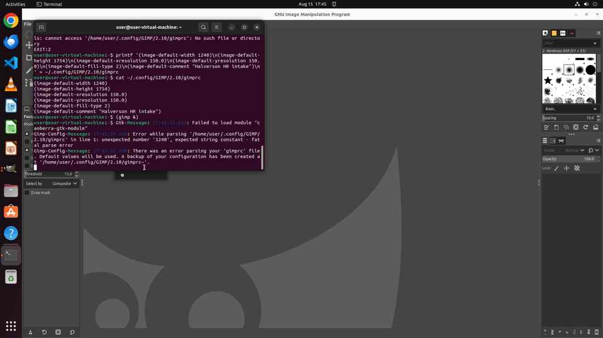
step 49.2 02:45:13
same model call as the previous action
EXECUTED (pyautogui in VM)pyautogui.typewrite("gimp --version; echo ---; find / -name \"gimprc*\" 2>/dev/null; echo ---; ls -la ~/.config/GIMP/2.10/gimprc*")
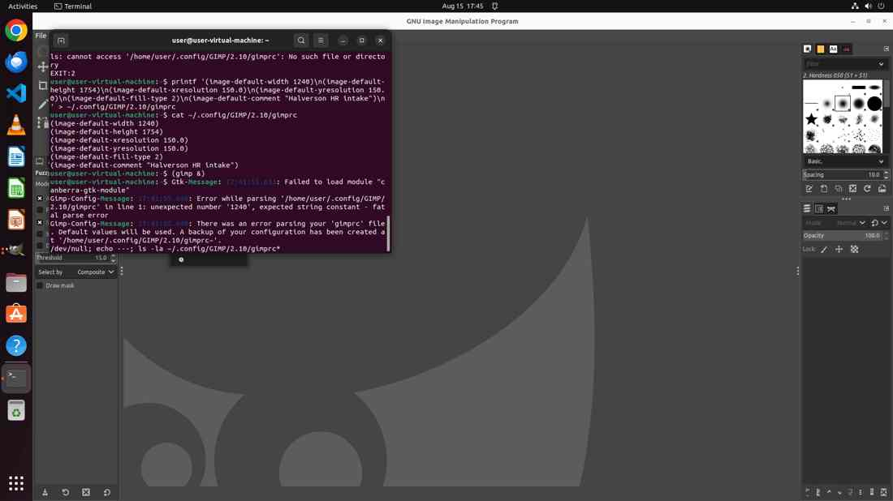
step 49.3 02:45:16
same model call as the previous action
EXECUTED (pyautogui in VM)pyautogui.press("return")
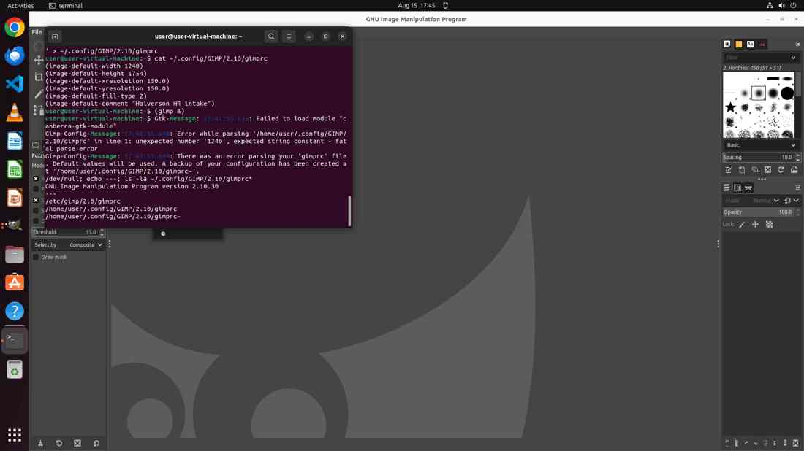
step 50.1 02:45:43
THINKINGKey info:
- GIMP version: "GNU Image Manipulation Program version 2.10.30" — so it IS GIMP 2.10.
- There's a system gimprc at: /etc/gimp/2.0/gimprc
- My files: ~/.config/GIMP/2.10/gimprc and gimprc~ (backup).
The system gimprc /etc/gimp/2.0/gimprc will show the EXACT correct format! Let me grep it for the image-default settings to see how they're formatted.
So GIMP reads /etc/gimp/2.0/gimprc as the system config and merges with ~/.config/GIMP/2.10/gimprc. My home gimprc had a parse error. Let me look at the system gimprc's image-default lines to copy the exact format.
ACTIONGIMP is 2.10.30, and there's a system template at `/etc/gimp/2.0/gimprc`. Let me inspect how it formats the image-default settings so I can copy the exact syntax.